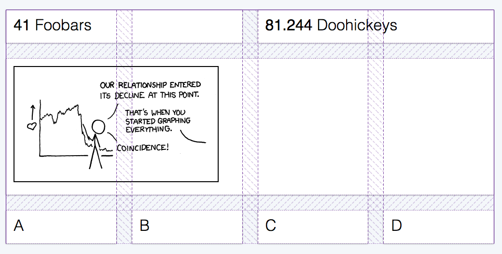

Good News! CSS Grid has been out for some time now, and browser support is very good. If you're building stuff on the web, this is definitely a tool you should have on your belt.
Not only is grid worth checking out, it’s also ready to be used in production, today. You know - on the real web.
So, what can we build with this? I’ve used grid on several projects now, and I found that it really makes building layouts a lot easier. I’ve put together a small demo here to show possible applications of CSS grids and how to make them work cross-browser.
üëâ Only after the code? You can find the full demo on Codepen.
Building an Admin Interface
We’re going to build a pretty common layout for the backend of an application, where admins or editors can manage their content:
By looking at the design above, we can already imagine the underlying grid. Unlike “regular” websites, these admin screens often have a lot of fixed UI elements that span the entire viewport, and only the main content area is scrollable.
Defining the basic layout is pretty straightforward - we just need to set our rows and columns. Basically, the interface consists of four parts:
- Header
- Navigation
- Main Content Area
- Footer
$admin-header-height: 70px;
$admin-footer-height: 70px;
$admin-nav-width: 250px;
.admin {
display: grid;
height: 100vh;
grid-template-rows: $admin-header-height 1fr $admin-footer-height;
grid-template-columns: $admin-nav-width 1fr;
grid-template-areas: "header header"
"nav main"
"footer footer";
}We can define the heights and widths using the grid-template-rows and grid-template-columns properties. The 1fr (= one fraction) in there is similar to flex-grow: it tells the browser to distribute any leftover space equally to the middle row, so the main content takes up all available space.
Finally, the grid-template-areas is just a convienience rule to let us name the parts of our grid to something a bit more readable. After doing that, we can assign all grid-items to their position on the grid.
.header {
grid-area: header;
}
.navigation {
grid-area: nav;
}
// ...you get the idea.Remember: The visual placement should generally follow the source order, to keep the document accessible.
Nested Grids: The Dashboard
We can nest another grid inside our main content area to display the dashboard. This will be a separate grid instance though, not connected to the main layout. (Sidenote: connected grids or “subgrids” are not yet possible, but the spec for it is already in development, and subgrids are likely to land with Grid Level 2).
Here’s a common design pattern where different statistics and widgets are displayed in a card grid:

This time, rather than explicitly defining our rows and columns, we’ll leave that open. We’ll just tell the browser how many columns we want, and to space them out evenly. When more items are placed on the grid, the container can just generate additional grid tracks on the fly. This “implicit” grid will accommodate any amount of content we may want to display.
üí° Pro Tip: By using a CSS custom property for the column count, we can easily switch from a 2-col to a 4-col grid on larger screens.
.dashboard {
--column-count: 2;
display: grid;
grid-template-columns: repeat(var(--column-count), 1fr);
grid-gap: 2rem;
&__item {
// per default, an item spans two columns.
grid-column-end: span 2;
// smaller items only span one column.
&--half {
grid-column-end: span 1;
}
// full-width items span the entire row.
// the numbers here refer to the first and last grid lines.
&--full {
grid-column: 1 / -1;
}
}
@media screen and (min-width: 48rem) {
--column-count: 4;
}
}But what about {legacy browser} ?
Yes, yes I know, we need to support IE11. We need to support older mobile browsers. That’s why we can’t have nice things.
Fortunately, it‚Äôs possible to build a Flexbox fallback and progressively enhance from there! The layout remains usable, and more capable browsers get all that grid goodness üëå.
We dont even need a media query here, as the grid properties will simply override all flexbox definitions, if they’re supported. If not, the browser will ignore them.
.admin {
// define flexbox fallback first.
display: flex;
flex-wrap: wrap;
// then add the grid definition.
display: grid;
...
&__header,
&__footer {
flex-basis: 100%;
}
&__nav {
flex-basis: $admin-nav-width;
}
&__main {
flex: 1;
}
}For the dashboard card grid fallback, things are slightly more complex. We have to account for the missing grid-gap property, so we’ll have to fake the spacing with margins and paddings:
.dashboard {
display: flex;
flex-wrap: wrap;
// offset the outer gutter with a negative margin.
margin: 0 -1rem;
&__item {
flex: 1 1 50%;
// this will add up to a 2rem gap between items.
padding: 1rem;
}
}Since these fallback gaps will mess with our layout if we do have grid support, we need a small reset to restore the original grid. Detecting support can be done using the @supports rule:
@supports (display: grid) {
.dashboard {
margin: 0;
}
.dashboard__item {
padding: 0;
}
}üëâ Check out the full demo on Codepen!
Further Reading
- Rachel Andrew: “The New CSS Layout” (A book apart)
- Una Kravets: “Grid To Flex”, Common layouts built with grid
- Manuel Matuzović: Progressively Enhancing CSS Layout: From Floats To Flexbox To Grid